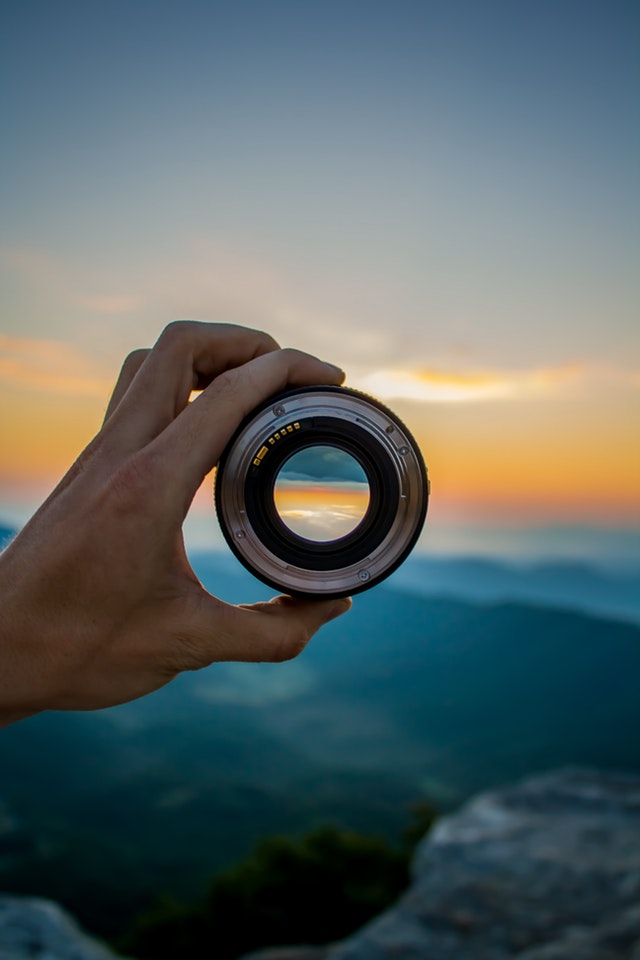

¿Quienes Somos?
Somos una empresa innovadora, operando en Guatemala desde 2014, creciendo y mejorando constantemente, disfrutando de cada evento y creando momentos mágicos e inolvidables plasmados en fotografías de la mejor calidad.
Un equipo de trabajo profesional, apasionado, dinámico, capacitado, con experiencia y en busca de brindar la mejor experiencia a todos y cada una de las personas.
¿Qué hacemos?
Fotografía
Cobertura fotográfica digital ilimitada durante el tiempo del paquete elegido. Se puede considerar una pausa por traslado de ceremonia a recepción.
Tomas desde diferentes ángulos en todos los momentos especiales, escenas importantes y con todos los invitados.
Edición digital en las fotografías que lo requieran, para mejorar intensidad, saturación, claridad, contraste.
Vídeo
Cobertura de video full HD durante el tiempo del paquete elegido. Se puede considerar una pausa por traslado de ceremonia a recepción.
•Grabación desde diferentes ángulos, en todos los momentos especiales, escenas importantes en movimiento.
Compilación de todas las escenas, recortes selectivos, animación de las transiciones, selección de temas musicales para alternar con audio original.
Entrega en full HD para reproducción continua de resumen del evento.
Cabinas de Fotos
Toma de fotografías e impresiones ilimitadas
Accesorios divertidos variados (sombreros, bufandas, antifaces, lentes, etc.)
Desde 3 hasta 7 fotos por impresión
Encabezado personalizado (diseño incluido)
Envío de todas las fotos digitales.